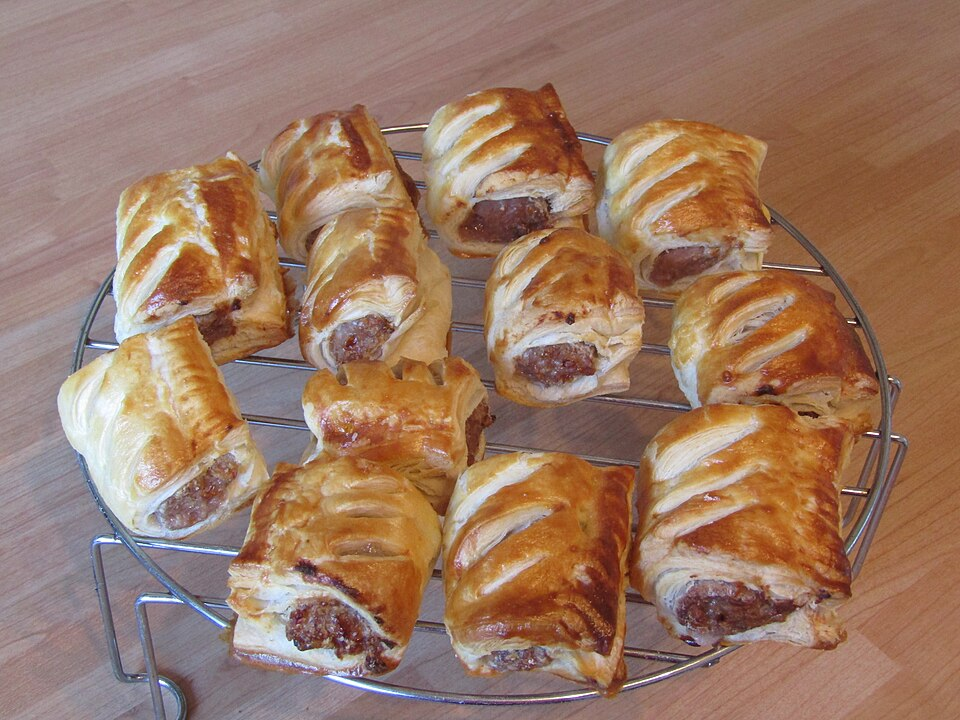

Salgados
Folhado de linguiça e ricota

Ingredientes
- 400 g de massa folhada
- 1 colher (sopa) de azeite
- 1 cebola picada
- 400 g de linguiça fresca
- 100 ml de vinho branco seco
- 2 tomates sem pele e sementes picados
- 250 g de ricota esfarelada
- 1 clara; 1 gema; 2 colheres (sopa) de leite
- Salsa, sal e pimenta
Modo de preparo
- Refogue cebola e linguiça 5 minutos; evapore o vinho; cozinhe o tomate 10 minutos; misture a ricota e esfrie.
- Espalhe na massa, feche com clara nas bordas; pincele gema com leite. Asse a 220 °C por 30 minutos.